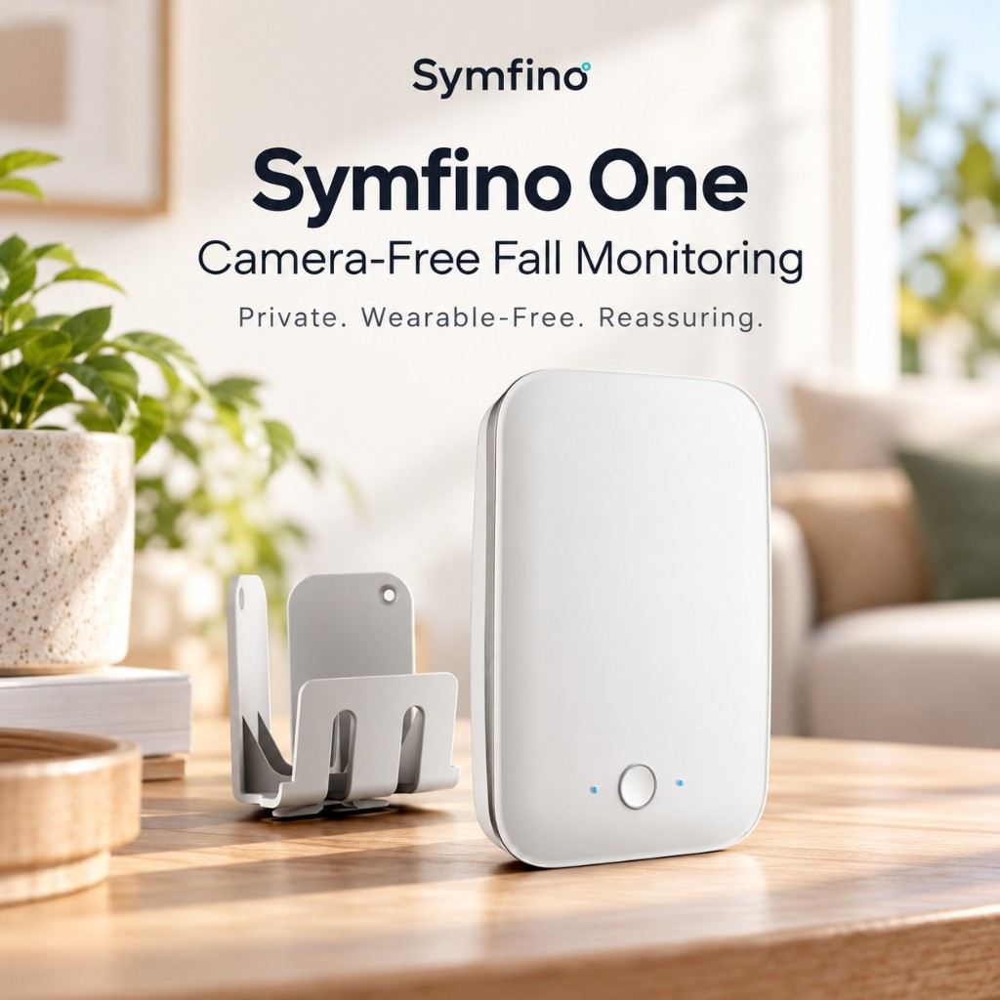
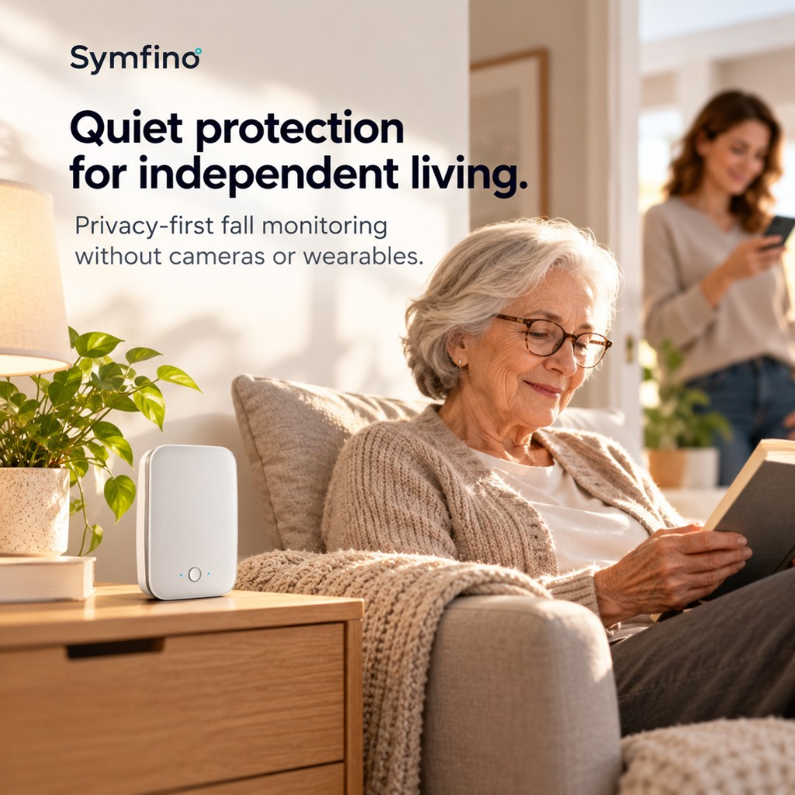
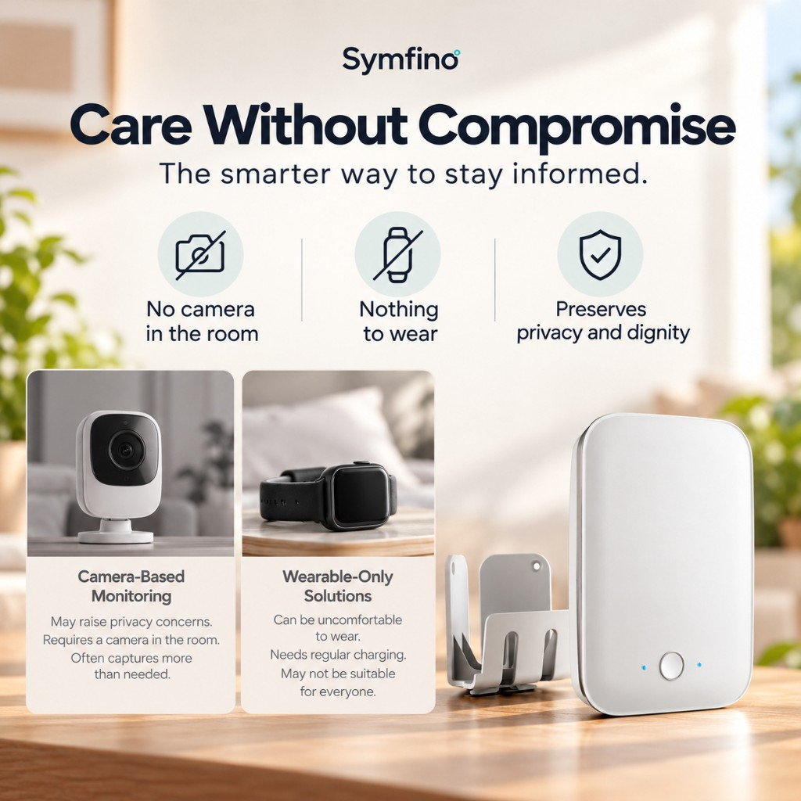
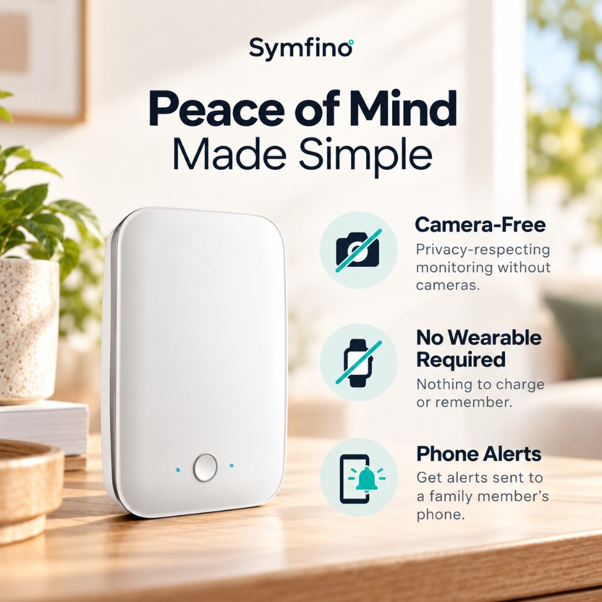
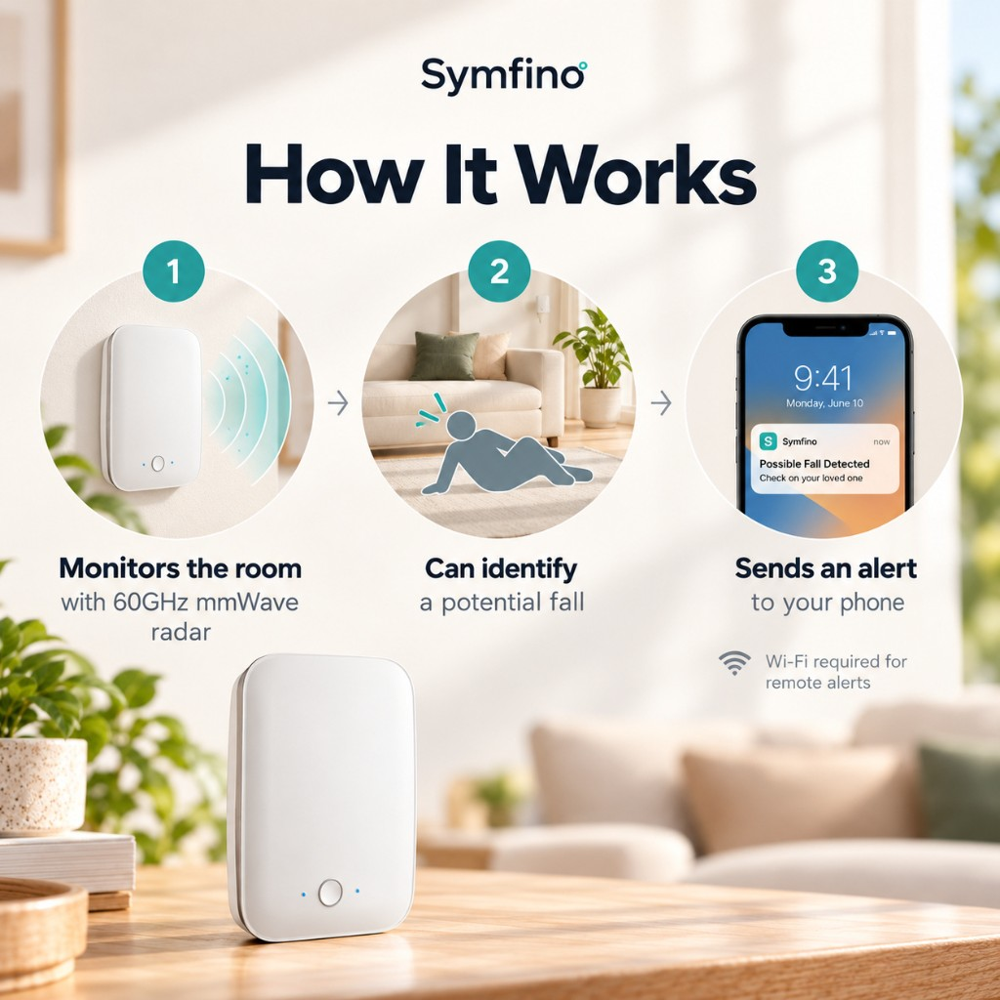
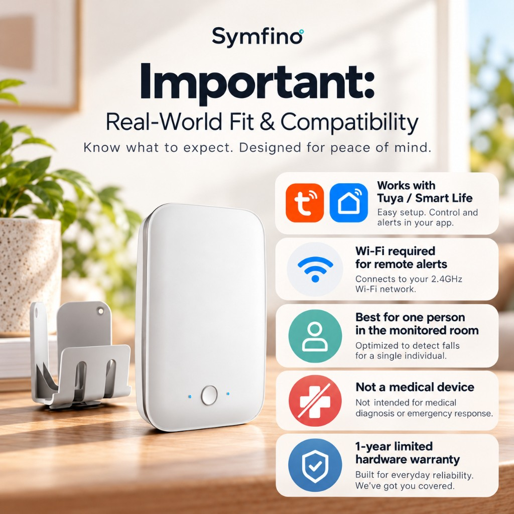

Camera-free
Privacy-respecting monitoring without cameras.
Symfino One
The smarter way to stay informed. Privacy-first fall monitoring without cameras or wearables.

Privacy-respecting monitoring without cameras.
Nothing to charge or remember.
Get alerts sent to a family member’s phone.

A room sensor instead of a camera or a device someone has to wear.
May raise privacy concerns. Requires a camera in the room. Often captures more than needed.
Can be uncomfortable to wear. Needs regular charging. May not be suitable for everyone.


With 60GHz mmWave radar.
Designed to notice when something may be wrong.
Possible fall detected. Check on your loved one.
Wi-Fi is required for remote alerts.

Know what to expect. Designed for peace of mind.
